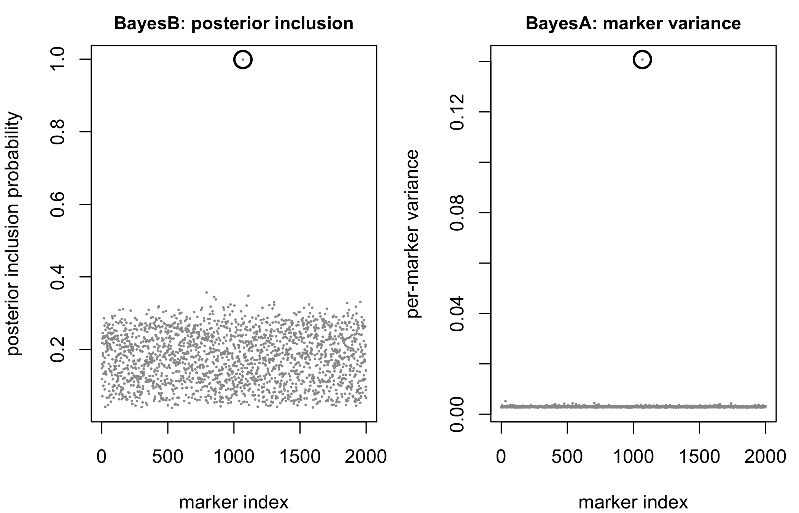
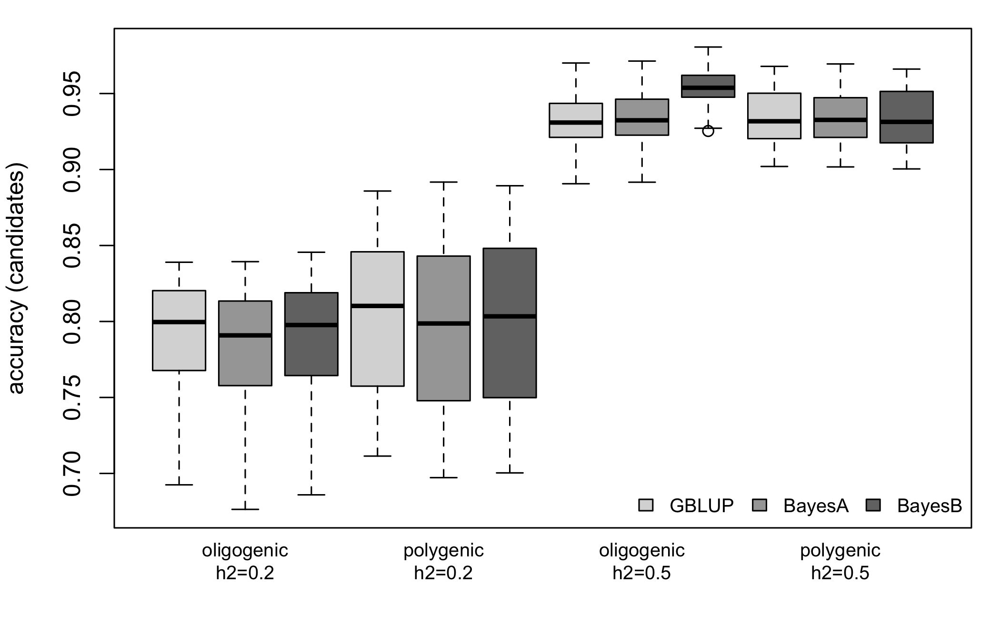

Show code
ctx <- simulate_data(book_cfg)
N <- ctx$N
g <- ctx$traits[, 1] # the true genetic value -- known only to us
G <- ctx$G # VanRaden G, centred on the hybrids' own frequencies
stopifnot(abs(var(g) - 1) < 1e-12)Chapter 13 treats S4, hybrid mining, as a selection among hybrids whose values it does not derive (its S4 section and Table 1.1), and nothing in it says where such values come from in a real programme. Chapter 1 states that genomic prediction supplies the predicted values that S4 selects on (its stage table, Table 1.1); this chapter supplies them for the simulated hybrids and measures what the models reach on them.
Two earlier chapters flagged the same gap. Chapter 6 built ctx$traits from known marker effects, so the traits carry no prediction error; its closing callout limits what that licenses to a statement about the optimum on known values and leaves the prediction gap to this chapter. Section 12.5 (Finding 5) showed what happens once the index carries error, but manufactured that error rather than fitting a model to produce it, and Chapter 25 will repeat the caveat. This chapter fits actual prediction models to a training population with phenotypic noise, and shows how their output enters the stage1_build() contract every later chapter consumes – for one trait, on a candidate subset, which changes \(N\) (Section 14.8).
vanraden_G() builds the matrix that Chapter 2 identifies as the one for genomic best linear unbiased prediction (GBLUP), and its documentation limits it to trait prediction. Nothing in the package has used it that way until now.
The chapter also has a second job, which only became apparent once the models were fitted: an accuracy number means nothing until you say what was hidden from the model. Section 14.4 shows that the obvious split – hold out a random 40% of the hybrids – answers the easiest of the three questions a hybrid programme actually asks, and that the fit itself says so, before the truth is consulted.
Every model fitted below follows the same two-step logic. Step one, training: markers and phenotypes recorded on a historical population – lines or hybrids already evaluated in earlier trials – are used to estimate a relationship between genotype and phenotype, either as marker effects (BayesA/BayesB/ridge) or as a variance structure over relatives (GBLUP). Step two, prediction: that same relationship is applied to the markers of candidate hybrids that have never been phenotyped, to rank them before any resource is committed to growing them out. Whether step two can also score a line-by-line combination that has never been made as a physical cross depends on the value being the mean of the two parental values, which a model additive across markers can score from the parents’ genotypes; for ctx$traits it is, by construction (Section 14.2). For a real hybrid of inbred lines the genotype is also fixed by the two parents, but the dominance part of the value is not the mean of parental values, and an additive model does not score it (Section 5.11).
Assumptions of the whole chapter, declared once. Inbred parent lines and a complete \(25 \times 25\) factorial of F1 hybrids (\(N = 625\), \(L = 50\) lines, \(m = 2000\) markers, book_cfg, seed 1). The trait is purely additive, with no dominance and so no specific combining ability (SCA); it is generated from the same markers the models see, so every causal locus is genotyped and there is no gap between markers and quantitative trait loci (QTL) and no linkage disequilibrium (the accuracies are a best case in that respect). Genotypes are coded as dosages \(0/1/2\) for the models and the relationship matrix \(\mathbf{G}\) is centred on the allele frequencies of the \(N\) hybrids themselves (Equation 2.3). \(h^2\) is supplied, not estimated. Accuracy means the Pearson correlation, among candidates, of the predicted value with the true genetic value g, unless a sentence says otherwise.
Everywhere else in this book, ctx$index is the truth. Here it plays a different role: it is the value a real breeding programme does not get to see, and can only estimate from phenotypes recorded on a subset of individuals. Building that subset takes three steps: manufacture a phenotype by adding noise to the true genetic value, split the population into the individuals that will carry a phenotype and those that will not, then hand only the first group’s records to the models fitted below.
ctx <- simulate_data(book_cfg)
N <- ctx$N
g <- ctx$traits[, 1] # the true genetic value -- known only to us
G <- ctx$G # VanRaden G, centred on the hybrids' own frequencies
stopifnot(abs(var(g) - 1) < 1e-12)A phenotype is the genetic value plus environmental noise, \(y = g + e\), and heritability is the fraction of phenotypic variance the genetic part accounts for, \(h^2 = \mathrm{Var}(g) / (\mathrm{Var}(g) + \mathrm{Var}(e))\). traits is built by scale(), so the sample variance of \(g\) over the \(N\) hybrids is 1 exactly, and the noise variance that delivers a target \(h^2\) is \((1-h^2)/h^2\):
h2 <- 0.5
set.seed(9)
e <- rnorm(N, 0, sqrt((1 - h2) / h2))
y <- g + eSplit the population into a training set, whose phenotypes the model gets to see, and a candidate set – the hybrids actually being selected among – whose phenotypes it does not. This mirrors the two roles a real programme’s germplasm plays at any one time: training stands in for hybrids already phenotyped in earlier trials, and candidates stand in for this cycle’s untested combinations, ranked here purely from markers:
set.seed(9)
train <- sample.int(N, floor(0.6 * N))
cand <- setdiff(seq_len(N), train)
c(train = length(train), candidates = length(cand))
#> train candidates
#> 375 250Two properties of \(g\) decide everything that follows, and both are consequences of how Chapter 6 built it rather than choices made here. Both require that the trait is generated from the markers the models are given and is purely additive, as declared above.
ctx$traits is scale(Z %*% B) with the marker effects B drawn independently; \(\mathbf{Z}\) is the centred dosage matrix of vanraden_G() (\(N \times m\); the Matrices table of the notation appendix). For a single trait that is \(\mathbf{g} = \mathbf{Z}\boldsymbol\beta\) with \(\mathrm{Var}(\boldsymbol\beta) = \mathbf{I}\sigma^2_\beta\) over draws of \(\boldsymbol\beta\), so
\[\mathrm{Var}(\mathbf{g}) = \mathbf{Z}\mathbf{Z}'\sigma^2_\beta = \mathbf{G}\,\underbrace{2\textstyle\sum_k p_k(1-p_k)\,\sigma^2_\beta}_{\sigma^2_u}, \tag{14.1}\]
because \(\mathbf{G}\) is defined as \(\mathbf{Z}\mathbf{Z}'\) over that same divisor (Chapter 2). Two checks, both asserted: the package’s ctx$G carries that divisor, and \(\mathbf{g}\) lies in the column space of \(\mathbf{Z}\) (a necessary condition for \(\mathbf{g} = \mathbf{Z}\boldsymbol\beta\), informative because that space has far fewer dimensions than \(N\), see Section 14.3.2):
vr <- vanraden_G(ctx$X * 2)
s2 <- 2 * sum(vr$p * (1 - vr$p))
dev_G <- max(abs(tcrossprod(vr$Z) / s2 - ctx$G))
dev_g <- max(abs(g - qr.fitted(qr(vr$Z), g)))
stopifnot(dev_G < 1e-10, dev_g < 1e-8)
c(G_vs_definition = dev_G, g_outside_span_Z = dev_g)
#> G_vs_definition g_outside_span_Z
#> 0.000000e+00 1.240452e-12So the covariance GBLUP assumes for the breeding values (Equation 14.1) is, up to the scalar \(\sigma^2_u\), the covariance the breeding values are generated with. This simulation is the infinitesimal model, and that single fact is most of the answer to “which model wins” below. It is also the sense in which every accuracy in this chapter is a best case: no model here is misspecified. The scalar is not a free parameter anyone drew: scale() fixes the realised variance of \(g\) at 1, and the expected variance of \(g_i\) is \(G_{ii}\sigma^2_u\), so the standardisation implies \(\sigma^2_u \approx 1/\overline{G_{ii}} =\) 1.114, with \(\overline{G_{ii}} =\) 0.898.
The hybrids are F1s of homozygous lines, so a hybrid’s marker row is the average of its two parents’ rows, and averaging is linear. For any additive effect vector whatsoever, the hybrid’s genetic value is therefore the mean of the two parental line values – general combining ability (GCA), with no SCA left over:
L <- simulate_lines(book_cfg)
set.seed(21)
bb <- rnorm(ctx$m) # any effects at all; the identity is linear
vL <- as.numeric((L / 2) %*% bb) # the parental line values they imply
dev_lin <- max(abs(as.numeric(ctx$X %*% bb) - (vL[ctx$ped$a] + vL[ctx$ped$b]) / 2))
stopifnot(dev_lin < 1e-10)
dev_lin
#> [1] 2.202682e-13The residual is at machine precision because the statement is an identity (asserted to be below \(10^{-10}\)). Two consequences run through the rest of the chapter. The mild one is that a “hybrid-specific” prediction has nothing to predict here: the dominance effects \(d_k\) of Chapter 5 are absent from ctx$traits by construction, so SCA (Section 5.11) is not merely unmodelled, it is not in the data. The sharp one is Section 14.3.2.
There is a third consequence, the operational payoff, and it holds under the additive condition declared above. Because a hybrid’s value is a fixed linear function of its two parents’ marker genotypes, once marker effects are estimated from a training population of phenotyped hybrids, that same estimate scores any line A x line B combination, including one never crossed: its score needs only the two lines’ genotype rows (checked on fitted effects in Section 14.5 below). What this saves is the phenotyping of that hybrid; what it costs is genotyping its two lines, which the simulation has for all \(L = 50\). Whether the lines are genotyped anyway in a real programme, and what a crossing and evaluation cycle costs, are not quantified in this book. The saving in memory that Chapter 13 attributes to S4 belongs to the diversity computation and is a different one. In a real hybrid the identity covers only the additive part: the dominance part of GCA is an average effect at the opposite pool’s frequencies (Chapter 1) and SCA is a property of the pair, so a model additive across markers scores the sum of the parents’ additive parts and nothing else.
GBLUP treats the breeding value as a random effect \(\mathbf{u}\) with covariance proportional to the genomic relationship matrix, \(\mathrm{Var}(\mathbf{u}) = \mathbf{G}\,\sigma_u^2\), and solves the mixed model equations. Fitting and using it is three operational steps, in this order: first write down the mixed model equations linking phenotypes, a relationship matrix and a variance ratio; second, solve that linear system once, for every individual in the population at the same time, training and candidates alike; third, convert the same solve’s by-product – the inverse of its coefficient matrix – into a reliability for each prediction, which is the only part of the output a programme can trust without knowing the truth.
The model is \(\mathbf{y} = \mathbf{1}\mu + \mathbf{W}\mathbf{u} + \mathbf{e}\) with \(\mathbf{u} \sim (\mathbf{0}, \mathbf{G}\sigma^2_u)\) and \(\mathbf{e} \sim (\mathbf{0}, \mathbf{I}\sigma^2_e)\) independent, where \(\mathbf{W}\) is the incidence matrix mapping training records to individuals (\(n_t \times N\); the symbol \(\mathbf{Z}\) is kept for the centred marker matrix, as in the notation appendix). Treating \(\mathbf{u}\) as a random variable rather than a parameter to be estimated, the standard derivation of the mixed model equations maximises the joint density of what is observed and what is not (Henderson (1975) is this book’s reference for best linear unbiased prediction, BLUP; that the joint-density derivation is in that paper was not verified),
\[-2\log p(\mathbf{y}, \mathbf{u}) \;\propto\; \frac{(\mathbf{y} - \mathbf{1}\mu - \mathbf{W}\mathbf{u})' (\mathbf{y} - \mathbf{1}\mu - \mathbf{W}\mathbf{u})}{\sigma^2_e} \;+\; \frac{\mathbf{u}'\mathbf{G}^{-1}\mathbf{u}}{\sigma^2_u},\]
and the two stationarity conditions, multiplied through by \(\sigma^2_e\), are
\[\begin{bmatrix}\mathbf{1}'\mathbf{1} & \mathbf{1}'\mathbf{W} \\ \mathbf{W}'\mathbf{1} & \mathbf{W}'\mathbf{W} + \mathbf{G}^{-1}\lambda \end{bmatrix} \begin{bmatrix}\hat\mu \\ \hat{\mathbf{u}}\end{bmatrix} = \begin{bmatrix}\mathbf{1}'\mathbf{y} \\ \mathbf{W}'\mathbf{y}\end{bmatrix}, \qquad \lambda = \sigma_e^2/\sigma_u^2, \tag{14.2}\]
with \(\mathbf{1}\) a vector of ones of length \(n_t\) and \(\hat\mu\) the generalised-least-squares (GLS) intercept. As written, the equations need \(\mathbf{G}^{-1}\), which does not exist for the \(\mathbf{G}\) of this chapter (Section 14.3.2); every solve below uses \(\mathbf{G}^{*} = w_G\,\mathbf{G} + (1-w_G)\,\mathbf{I}\) with \(w_G = 0.95\) (w in the code) in its place, unless a sentence varies \(w_G\) (\(0 < w_G \le 1\)). In this chapter \(\mathbf{u}\) and the simulation’s \(\mathbf{g}\) denote the same quantity, the additive genetic value of the hybrids, \(\hat{\mathbf{u}}\) is its BLUP and \(g\) the truth the accuracy is measured against. Section 12.5 gives the same roles to different letters: \(u\) is the true index there (the truth, \(g\) here) and \(\hat u\) a simulated prediction (a fitted BLUP here), so what differs is the name of the truth and the origin of the prediction. Three things fall out of that derivation that the equations alone do not say.
\(\mathbf{u}\) is defined over all \(N\) individuals, training and candidates together – it enters through the prior, not through the data – so one solve produces predictions for both, and a candidate with no record of its own is predicted entirely by its \(\mathbf{G}\) entries against individuals that do have one. Everything Section 14.4 finds is a consequence of that sentence.
\(\lambda\) is a variance ratio, not a tuning parameter. The code takes \(\lambda = (1-h^2)/h^2\), which is \(\sigma^2_e/\sigma^2_u\) only if \(\sigma^2_u = 1\). It is not: the standardisation of traits implies \(\sigma^2_u \approx\) 1.114 (Section 14.2), so the ratio matching the generating model is \(\lambda\,\overline{G_{ii}}\), 0.898 rather than 1 at \(h^2 = 0.5\): the supplied \(\lambda\) is about 11% too large (its effect on accuracy is measured right after the fit). Nothing in this chapter estimates it; a real programme would, by restricted maximum likelihood (REML).
And under normality the joint maximiser is the conditional mean, \(\hat{\mathbf{u}} = \mathbb{E}[\mathbf{u} \mid \mathbf{y}]\), which is why BLUP minimises mean squared error rather than merely being a sensible shrinkage rule. Dropping normality it remains best among linear predictors, which is what the acronym claims.
Equation 2.4, \(\mathbf{1}'\mathbf{G}\mathbf{1} = 0\), is what Section 2.2 reads as the reason \(\mathbf{G}\) cannot measure diversity. It has a second consequence, for prediction. \(\mathbf{G}\) is positive semi-definite, and a quadratic form of a PSD matrix vanishes only on its null space, so \(\mathbf{1}'\mathbf{G}\mathbf{1} = 0\) forces
\[\mathbf{G}\mathbf{1} = \mathbf{0}.\]
For the \(\mathbf{G}\) of Equation 2.3, centred on the frequencies of the same individuals, \(\mathbf{G}\) is therefore singular whatever \(N\) and \(m\) are; the blend is not insurance against an awkward case, and without it solve() has nothing to invert. (A \(\mathbf{G}\) centred on a fixed base, such as \(\mathbf{G}_{0.5}\), need not satisfy Equation 2.4, and the argument of this paragraph does not apply to it; the factorial bound below still does.)
Here it is much worse than one lost dimension. By the identity of Section 14.2 every hybrid row is an average of two line rows, so the whole \(N \times m\) matrix lives in the span of the \(L\) line genotypes. This is the argument of Equation 10.5 (\(\mathrm{rank}(\mathbf{f}) \le \mathrm{rank}(\mathbf{B})\), with \(\mathbf{B}\) the \(N \times L\) parent-usage incidence matrix), which Chapter 10 proves for \(\mathbf{f}\) and measures at one scale; it carries over to the centred \(\mathbf{G}\) with one more step. Each hybrid uses exactly one line from each pool, which makes the pool-A indicator columns of \(\mathbf{B}\) sum to the pool-B ones, so \(\mathrm{rank}(\mathbf{B}) = L - 1\) for the complete factorial, and the columns of \(\mathbf{Z}\) are centred, which removes the constant vector (itself in the span of \(\mathbf{B}\)). Hence
\[\mathrm{rank}(\mathbf{G}) \le \min(L - 2,\; m), \tag{14.3}\]
a bound (a theorem under the stated factorial design), not an equality. The number of markers enters only through \(m\), which is not binding here. Whether the bound is attained depends on the line genotypes; it is measured below (Table 14.1) at three values of \(L\), one simulated population each, with \(m = 2000\) fixed:
c(max_abs_G_times_one = max(abs(ctx$G %*% rep(1, N))))
#> max_abs_G_times_one
#> 1.16334e-13
rank_G <- function(n_per_pool) {
cfg <- utils::modifyList(book_cfg, list(n_pool_A = n_per_pool, n_pool_B = n_per_pool))
G <- simulate_data(cfg)$G
c(lines = 2 * n_per_pool, hybrids = nrow(G),
rank = sum(eigen(G, only.values = TRUE)$values > 1e-8))
}
rk <- t(sapply(c(10, 20, 25), rank_G))
stopifnot(all(rk[, "rank"] == rk[, "lines"] - 2)) # the bound is attained at all three| lines | hybrids | rank |
|---|---|---|
| 20 | 100 | 18 |
| 40 | 400 | 38 |
| 50 | 625 | 48 |
At the book’s scale (Table 14.1) that is 48 dimensions carrying 625 hybrids: 577 of the eigenvalues are zero, and 0.95 * G + 0.05 * I is what makes the equations solvable at all. Fifty lines were genotyped and crossed into 625 combinations, but there were only ever 48 independent dimensions to measure; no amount of phenotyping the 625 adds one more.
lambda <- (1 - h2) / h2
gblup <- function(y, train, h2, w = 0.95, lambda = (1 - h2) / h2) {
Gs <- w * G + (1 - w) * diag(N) # G*: the blend of the text
n_t <- length(train)
W <- matrix(0, n_t, N); W[cbind(seq_len(n_t), train)] <- 1 # incidence
X1 <- matrix(1, n_t, 1)
LHS <- rbind(cbind(crossprod(X1), crossprod(X1, W)),
cbind(crossprod(W, X1), crossprod(W) + solve(Gs) * lambda))
RHS <- rbind(crossprod(X1, y[train]), crossprod(W, y[train]))
C <- solve(LHS) # kept: it carries the PEVs
sol <- C %*% RHS
list(mu = sol[1], u = sol[-1],
rel = 1 - diag(C)[-1] * lambda / diag(Gs))
}
fit <- gblup(y, train, h2)
u_hat <- fit$u
cat("GBLUP accuracy (candidates):", cor(u_hat[cand], g[cand]), "\n")
#> GBLUP accuracy (candidates): 0.9596232gblup() has no independent check in the usual sense, so the chunk below solves the same model by a different route – the kernel form \(\hat{\mathbf{u}} =
\mathbf{G}^{*}_{\cdot t}(\mathbf{G}^{*}_{tt} + \mathbf{I}\lambda)^{-1}(\mathbf{y}_t -
\hat\mu\mathbf{1})\), with \(\hat\mu\) the GLS intercept under \(\mathbf{V} = \mathbf{G}^{*}_{tt} + \mathbf{I}\lambda\), which needs no inverse of \(\mathbf{G}^{*}\) – and asserts the two agree:
tr <- train
Gs <- 0.95 * G + 0.05 * diag(N)
V <- Gs[tr, tr] + diag(lambda, length(tr))
Vi1 <- solve(V, rep(1, length(tr)))
mu_gls <- sum(Vi1 * y[tr]) / sum(Vi1)
u_oracle <- Gs[, tr] %*% solve(V, y[tr] - mu_gls)
dev_gblup <- max(abs(fit$u - as.numeric(u_oracle)))
stopifnot(dev_gblup < 1e-8, abs(fit$mu - mu_gls) < 1e-8)
c(max_abs_diff_u = dev_gblup, mu_hat_GLS = mu_gls, mean_y_train = mean(y[tr]))
#> max_abs_diff_u mu_hat_GLS mean_y_train
#> 4.352074e-14 1.691915e-02 3.369654e-02The two routes agree to 4.4^{-14}. The intercept \(\hat\mu\) is the GLS value 0.017, not the training mean 0.034: the residual vector that enters the equations is \(\mathbf{y}_t - \hat\mu\mathbf{1}\) with the former.
The supplied \(\lambda\) assumed \(\sigma^2_u = 1\) (Section 14.3.1). Setting it to the ratio implied by the standardisation, \(\lambda\,\overline{G_{ii}}\), moves the accuracy on this split from 0.9596 to 0.9598, one split, one noise draw.
This is the third step promised above. Inverting the coefficient matrix rather than just solving against it costs one more decomposition and returns something a breeding programme can act on: a per-candidate confidence figure computed the same day the genomic estimated breeding value (GEBV) is, with no field trial required to check it. The \(\mathbf{u}\) block of that inverse holds the prediction error variances, \(\mathrm{PEV}_i = \sigma^2_e\,[\mathbf{C}^{uu}]_{ii}\), and the reliability of an individual’s prediction (Equation 14.4) is the fraction of its prior variance the data removed:
\[r_i^2 \;=\; 1 - \frac{\mathrm{PEV}_i}{\sigma^2_u\,\mathbf{G}^{*}_{ii}} \;=\; 1 - \frac{\lambda\,[\mathbf{C}^{uu}]_{ii}}{\mathbf{G}^{*}_{ii}}, \tag{14.4}\]
where \(\mathbf{C}^{uu}\) is the \(\mathbf{u}\) block of the inverse and the second form is the one the code evaluates: \(\sigma^2_u\) cancels, so only the supplied \(\lambda\) enters, not a separate value of \(\sigma^2_u\). This is the same \(r\) as the accuracy reported everywhere in this chapter, with one difference that is the entire point: \(g\) does not appear in it. A programme can compute it for candidates it has never phenotyped and never will.
c(mean_reliability = mean(fit$rel[cand]),
implied_accuracy = sqrt(mean(fit$rel[cand])),
realised_accuracy = cor(u_hat[cand], g[cand]))
#> mean_reliability implied_accuracy realised_accuracy
#> 0.8016810 0.8953664 0.9596232On this one split (seed 9) the model under-states itself by 0.064. That is a single draw of noise and split. The chunk below repeats the whole fit over 40 fresh draws, noise seed \(s\) and split seed \(s + 1000\) for \(s = 101, \dots, 140\), and also recomputes the implied accuracy with the blend turned down to \(w_G = 0.999\): the blend \(0.95\mathbf{G} + 0.05\mathbf{I}\) tells the equations that every candidate carries 5% of variance no relative can explain, and each \(r_i^2\) is computed against that inflated prior. Table 14.2 gives the mean and standard deviation of each quantity over the 40 draws.
rep_seed <- function(s) {
set.seed(s); ys <- g + rnorm(N, 0, sqrt((1 - h2) / h2)) # noise draw
set.seed(s + 1000); tr <- sample.int(N, floor(0.6 * N)) # split draw
cd <- setdiff(seq_len(N), tr)
f95 <- gblup(ys, tr, h2)
f999 <- gblup(ys, tr, h2, w = 0.999)
fcor <- gblup(ys, tr, h2, w = 0.999, lambda = lambda * mean(diag(G))) # sigma_u^2 as implied
err <- g[cd] - f95$u[cd]
fc <- ctx[["f"]][cd, cd]; ut <- upper.tri(fc)
c(accuracy = cor(f95$u[cd], g[cd]),
implied = sqrt(mean(f95$rel[cd])),
implied_w999 = sqrt(mean(f999$rel[cd])),
implied_w999_lam = sqrt(mean(fcor$rel[cd])),
err_f = cor(outer(err, err)[ut], fc[ut])) # used in the last section
}
R40 <- t(sapply(101:140, rep_seed))
gap40 <- R40[, "accuracy"] - R40[, "implied"]
blend40 <- R40[, "implied_w999"] - R40[, "implied"]
lam40 <- R40[, "implied_w999_lam"] - R40[, "implied_w999"]
acc9 <- cor(u_hat[cand], g[cand])
knitr::kable(fmt(t(rbind(mean = colMeans(R40), sd = apply(R40, 2, sd))), 4))implied) and at \(w_G = 0.999\) (implied_w999), of the latter with the supplied \(\lambda\) replaced by the one implied by the standardisation (implied_w999_lam), and of err_f, the correlation between the products of candidate prediction errors and their coancestry \(f\) (used in the last section).
| mean | sd | |
|---|---|---|
| accuracy | 0.9392 | 0.0151 |
| implied | 0.8952 | 0.0011 |
| implied_w999 | 0.9271 | 0.0011 |
| implied_w999_lam | 0.9337 | 0.0010 |
| err_f | 0.1437 | 0.0139 |
Over the 40 draws the realised accuracy is 0.939 (s.d. 0.015) and the implied accuracy 0.895 (s.d. 0.001): the model under-states itself by 0.044 (s.d. 0.015). Lowering the blend to \(w_G = 0.999\) raises the implied accuracy by 0.032, which is 72% of the mean gap. Also supplying the \(\lambda\) implied by the standardisation, \(\lambda\,\overline{G_{ii}}\) (the supplied \(\lambda\) is 11% too large, as stated in Section 14.3.1), moves it by a further 0.007; what is left, 0.006, survives both changes and is not attributed here. The opening split is not typical of the 40: its accuracy 0.960 lies 1.4 s.d. above their mean, so numbers quoted for it alone (its gap of 0.064) should not be read as properties of the method. A mean reliability and a correlation taken across a set of candidates are not the same quantity: the second is helped by the spread of true values among the candidates, which the first knows nothing about, and this may account for part of the remaining gap (not tested here). In the direction measured, the implied accuracy is conservative. Table 14.3 gives the gap scheme by scheme.
The split at the top of this chapter took a random 60% of the hybrids. There are 625 hybrids but only 50 lines, so a sample that size contains every line several times over: each of the 250 candidates has both of its parents sitting in the training set, in other hybrids with recorded phenotypes. Given Section 14.2 – a hybrid’s value is the mean of its two parental values – that split asks the model to interpolate inside a factorial whose margins it has already seen. It is not a hard question.
The partition of untested hybrids by how many of their parents appear in the training set – two, one or none – is Technow et al. (2014)’s, applied to a factorial between two heterotic pools; they call the three groups T2, T1 and T0. This chapter uses the labels CV2, CV1 and CV0 for the same three groups, borrowing the names from the genotype-by-environment literature, where Burgueño et al. (2012) define CV1 and CV2 for untested genotypes and for genotypes tested in some environments but not others. The meaning here is therefore this book’s, not theirs, and differs from the one Section 19.4 gives the same labels for genotype-by-environment cells (the notation appendix lists both). Holding out lines rather than hybrids splits the candidates three ways: both parents seen (the random split, CV2), one parent unseen (CV1), neither parent seen (CV0). Removing 8 lines from each pool leaves 289 training hybrids and gives 272 CV1 and 64 CV0 candidates; the CV2 row below draws a random training set of the same 289, so the only thing that differs across the three rows is what was hidden, not how much. Each of the 20 replicates draws its own noise (seed \(s\)) and its own held-out lines (seed \(s + 1000\)), so the dispersion reported includes noise as well as the choice of lines; the genetic values \(g\) are the single draw of ctx$traits throughout.
cv_split <- function(seed, k = 8) {
set.seed(seed) # noise draw
ys <- g + rnorm(N, 0, sqrt((1 - h2) / h2))
set.seed(seed + 1000) # which lines / hybrids are held out
hoA <- sample(unique(ctx$ped$a), k)
hoB <- sample(unique(ctx$ped$b), k)
seen_a <- !(ctx$ped$a %in% hoA)
seen_b <- !(ctx$ped$b %in% hoB)
lin <- gblup(ys, which(seen_a & seen_b), h2) # lines held out
rnd <- sample.int(N, sum(seen_a & seen_b)) # same size, random hybrids
rd <- gblup(ys, rnd, h2)
i2 <- setdiff(seq_len(N), rnd)
i1 <- which(xor(seen_a, seen_b))
i0 <- which(!seen_a & !seen_b)
c(CV2 = cor(rd$u[i2], g[i2]), imp2 = sqrt(mean(rd$rel[i2])),
CV1 = cor(lin$u[i1], g[i1]), imp1 = sqrt(mean(lin$rel[i1])),
CV0 = cor(lin$u[i0], g[i0]), imp0 = sqrt(mean(lin$rel[i0])),
n_train = sum(seen_a & seen_b), n1 = length(i1), n0 = length(i0))
}
cv <- t(sapply(1:20, cv_split))
cvm <- colMeans(cv)
cvsd <- apply(cv, 2, sd)
cvse <- cvsd / sqrt(nrow(cv))
gapcv <- cv[, c("imp2", "imp1", "imp0")] - cv[, c("CV2", "CV1", "CV0")] # implied accuracy minus realised accuracy
stopifnot(all(cv[, "n_train"] == 289), all(cv[, "n1"] == 272), all(cv[, "n0"] == 64))accuracy is the realised correlation with the truth, sd its standard deviation over replicates, se the standard error of the mean; implied is the model’s own estimate of the accuracy, \(\sqrt{\overline{r_i^2}}\) over the candidates of the scheme (square root of the mean reliability), computed without the truth; gap is implied minus realised accuracy, with its standard error.
| scheme | accuracy | sd | se | implied | gap | se of gap |
|---|---|---|---|---|---|---|
| CV2 – random hybrids held out | 0.905 | 0.023 | 0.005 | 0.873 | -0.031 | 0.005 |
| CV1 – one parent unseen | 0.665 | 0.068 | 0.015 | 0.644 | -0.021 | 0.015 |
| CV0 – both parents unseen | 0.144 | 0.155 | 0.035 | 0.127 | -0.017 | 0.035 |
The mean accuracy of the first row is 0.905 (Table 14.3); the second, one unseen parent, is 0.665, a drop of 26%; the third, two unseen parents, is 0.144 with a spread across replicates (s.d. 0.155) larger than the mean. The standard error of the CV0 mean is 0.035, so the mean is 4.2 standard errors from zero over these 20 replicates, while 20% of the individual replicates returned an accuracy of zero or less (range -0.139 to 0.414). The mean is distinguishable from nothing; a single holdout of the size used here (64 candidates) is not reliably so. A programme has one holdout, not twenty.
Habier et al. (2007) show that the accuracy of marker-based predictions can come from relationships among individuals captured by the markers, as well as from marker effects estimated in their own right. In this simulation the markers are the causal set and there is no linkage disequilibrium, so the three rows differ in how much relationship to the training set is available: the first row is almost entirely relatedness through shared parents. The third row is what remains when no parent is shared, and relationship through the other lines of the pool is still available to it; it is therefore not a measure of “markers alone”, but it is the closest the design comes to one.
That the third row collapses is not a defect of the fit. The explanation proposed here is the rank bound of Equation 14.3, tested only weakly below: the 289 training rows of \(\mathbf{G}\) are built from 34 training lines, and their rank is bounded by that number minus one, which is what is measured on one draw of held-out lines (that is a statement about the training matrix, not yet about the collapse of accuracy):
set.seed(1001)
ho <- sample(unique(ctx$ped$a), 8); hb <- sample(unique(ctx$ped$b), 8)
tr_cv <- which(!(ctx$ped$a %in% ho) & !(ctx$ped$b %in% hb))
rank_train <- sum(eigen(G[tr_cv, tr_cv], only.values = TRUE)$values > 1e-8)
stopifnot(rank_train == 2 * (book_cfg$n_pool_A - 8) - 1)
c(training_hybrids = length(tr_cv), rank_of_G_tt = rank_train)
#> training_hybrids rank_of_G_tt
#> 289 33So 289 records carry 33 independent dimensions, and asking them to pin down 2000 marker effects well enough to score a genotype no relative shares is asking for something that was never in the data. Daetwyler et al. (2008) give a deterministic accuracy as a function of the product of the heritability and the ratio of the number of phenotypes to the number of loci or independent segments; the form used below, \(r = \sqrt{n h^2 / (n h^2 + M_e)}\) with \(n\) the number of independent training units and \(M_e\) the effective number of independent chromosome segments, is this chapter’s own algebraic statement of that dependence (a function of \(n h^2 / M_e\) alone), and is used here as the statement being tested. That it is the paper’s Eq. 1, and the symbol \(M_e\) (the paper writes \(n_G\) for the number of independent chromosome segments), were not seen in the printed equation; the paper’s text, which states the dependence on that product, was read. The units are a choice, and the choice matters. With the units the simulation has – \(n\) the independent lines and \(M_e\) the marker count, because the markers are drawn independently and carry no linkage to bundle them into segments – the formula gives the value in the first column below; taking \(n\) as the number of training records gives the last. Measured CV0 accuracy over 30 draws at each of three numbers of held-out lines \(k\) per pool (Table 14.4):
daet <- function(n, M_e = book_cfg$m) sqrt(n * h2 / (n * h2 + M_e))
dz <- t(sapply(c(4, 8, 12), function(k) {
r <- sapply(100 + 1:30, function(s) cv_split(s, k)[["CV0"]])
c(k = k, measured = mean(r), se = sd(r) / sqrt(30),
formula_lines = daet(2 * (book_cfg$n_pool_A - k)),
formula_records = daet((book_cfg$n_pool_A - k)^2))
}))| k | measured | se | formula, n = lines | formula, n = records |
|---|---|---|---|---|
| 4 | 0.062 | 0.065 | 0.102 | 0.315 |
| 8 | 0.119 | 0.046 | 0.092 | 0.260 |
| 12 | 0.093 | 0.023 | 0.080 | 0.201 |
The measured value lies within 0.6 standard errors of the lines-unit formula at every \(k\), and 3.1 or more standard errors from the records-unit one (Table 14.4). That is consistent with the lines unit; it does not confirm the formula, because the standard errors are large (they are of the size of the differences between \(k\)), the unit was chosen with the measured collapse already in view, and three values of \(k\) on one simulated population is the whole test.
The most useful column of Table 14.3 is the implied accuracy. It is the square root of the mean reliability \(r_i^2\) of Section 14.3.3 over the candidates of a scheme (the mean reliabilities themselves are 0.763, 0.415 and 0.016 for CV2, CV1 and CV0, the means over replicates of the squares of the column), taken on the scale of a correlation so that it can be set against the realised accuracy. Computed from the mixed model equations, with no access to \(g\), the implied accuracies are 0.644 against 0.665 for CV1 and 0.127 against 0.144 for CV0, in the mean, so they follow the realised accuracies down the collapse. The gap is clear only in the easy scheme: the implied accuracy under-states the realised one by 0.031 for CV2 (6.2 s.e.), by 0.021 for CV1 (1.4 s.e.) and by 0.017 for CV0 (0.5 s.e.), so for the hard schemes the model’s own figure is not distinguishable from exact on these replicates, and for CV2 it is conservative. The implied accuracies hardly vary between replicates (s.d. 0.001, 0.002, 0.003) while the realised accuracies do (0.023, 0.068, 0.155): the model knows the mean accuracy of a scheme, not what any one holdout will return. A programme that reports reliability alongside every GEBV does not need to discover the collapse the way this chapter did; the warning is in the same solve that produced the prediction.
An accuracy figure without its cross-validation scheme is not interpretable. The same fit, the same data and the same trait give a mean accuracy of 0.905, 0.665 or 0.144 here depending only on which hybrids were withheld. In a hybrid programme this is not a technicality: CV2 is the accuracy for filling in a partly-observed factorial, CV1 for a cross onto a new line from one pool, CV0 for a cross between two new lines. They are different questions, and only the first one is easy.
GBLUP assumes every marker contributes an equal, infinitesimal share of the genetic variance. The Bayesian alphabet (Meuwissen et al. 2001; Campos et al. 2013) relaxes that one assumption at a time. BayesA gives every marker its own variance, drawn from a scaled-inverse-\(\chi^2\) prior – effects are shrunk individually rather than uniformly, which matters when a few markers carry much more signal than the rest. BayesB adds a point mass at zero: each marker has prior probability \(\pi\) of being excluded entirely, so the model performs variable selection as it fits. Both reduce to GBLUP’s ridge-regression solution as a special case; they differ only in how much of the genetic architecture they let the data shape.
Fitting either is a different computational route to the same train-then-predict logic as GBLUP, in four steps rather than one linear solve: (1) declare a prior distribution for each marker effect \(\beta_k\), the thing that separates the three models; (2) run a Gibbs sampler that alternates between drawing each \(\beta_k\) given the current residuals and every other parameter, and drawing the variance components given the current effects, on the training records only; (3) average the post-burn-in draws into a single point estimate \(\hat{\boldsymbol\beta}\); (4) predict any candidate, phenotyped or not, by multiplying its marker dosages by \(\hat{\boldsymbol\beta}\) – exactly the same last step as scoring a hybrid from GBLUP’s \(\hat{\mathbf{u}}\), just reached through markers instead of a relationship matrix.
All three models write \(\mathbf{g} = \mathbf{Z}\boldsymbol\beta\), with \(\mathbf{Z}\) the centred dosage matrix. The Gibbs samplers are passed the uncentred dosages \(\mathbf{M}^H\) (\(0/1/2\), M in the code, the hybrid dosage matrix of the notation appendix), for which \(\mathbf{M}^H\boldsymbol\beta = \mathbf{Z}\boldsymbol\beta + \mathbf{1}\,(2\mathbf{p}'\boldsymbol\beta)\): the two differ by a constant that the intercept absorbs. The models differ only in what they assume about \(\beta_k\). Ridge regression, and therefore GBLUP, uses one variance for every marker; BayesA gives each marker its own, drawn from a scaled inverse chi-square; BayesB puts a spike at zero in front of it:
\[\text{ridge, and so GBLUP:}\quad \beta_k \sim N(0, \sigma^2_\beta) \qquad\qquad \text{BayesA:}\quad \beta_k \sim N(0, \sigma^2_k), \;\; \sigma^2_k \sim \chi^{-2}(\nu, S)\]
\[\text{BayesB:}\quad \beta_k \sim \begin{cases} 0 & \text{with probability } \pi \\[2pt] N(0, \sigma^2_k) & \text{otherwise.}\end{cases}\]
The scaled inverse chi-square is the conjugate prior for a normal variance, which is the whole reason it appears: it keeps the Gibbs sampler in closed form. Its two hyperparameters are the arguments the fits below pass. \(\nu\) is df = 5, the prior weight in pseudo-observations – small, so the prior stays vague, but not zero, because the posterior is improper at \(\nu = 0\). \(S\) is set from R2 = 0.5, the share of phenotypic variance the prior expects the markers to explain, spread over the markers by their observed variation. Neither is fitted; both are choices, and R2 in particular is a statement about heritability made before seeing the data.
This book fits both with bWGR::BayesA()/bWGR::BayesB() (Xavier et al. 2020) rather than by hand – unlike GBLUP, a Gibbs sampler over marker effects is not the few lines the mixed-model solve above was. In BayesB() the argument pi is a fixed input and the returned object has no pi (the arguments are y, X, it, bi, pi, df, R2); the call below fixes \(\pi = 0.95\), a choice, and nothing in the fit estimates it. set.seed() precedes each fit because the sampler draws from R’s generator:
if (!requireNamespace("bWGR", quietly = TRUE))
stop("this chapter needs the bWGR package (listed under Suggests): install.packages('bWGR')")
library(bWGR)
M <- ctx$X * 2 # dosage 0/1/2, what bWGR expects
set.seed(11)
fitA <- BayesA(y[train], M[train, ], it = 1500, bi = 500, df = 5, R2 = 0.5)
set.seed(12)
fitB <- BayesB(y[train], M[train, ], it = 1500, bi = 500, pi = 0.95, df = 5, R2 = 0.5)
predA <- as.numeric(M[cand, ] %*% fitA$b)
predB <- as.numeric(M[cand, ] %*% fitB$b)
c(BayesA = cor(predA, g[cand]), BayesB = cor(predB, g[cand]))
#> BayesA BayesB
#> 0.9601261 0.9587238Both fits produce a marker-effect vector $b; a candidate’s GEBV is just its genotypes dotted with those effects. GBLUP produced the same quantity from the relationship matrix instead of the markers directly – two routes to the same thing, checked next. Because a hybrid’s dosage row is the sum of its two parents’ \(0/1\) rows (Section 14.2), the fitted effects score a hybrid from the two lines’ genotype rows alone, which is what lets a model trained on made hybrids score a combination that was not made. For the fitted fitB$b, asserted:
vLb <- as.numeric((L / 2) %*% fitB$b) # parental line values under the fitted effects
dev_par <- max(abs(as.numeric(M[cand, ] %*% fitB$b) -
(vLb[ctx$ped$a[cand]] + vLb[ctx$ped$b[cand]])))
stopifnot(dev_par < 1e-10)
dev_par
#> [1] 0In this complete factorial every combination exists in ctx$X, so the check shows that the score depends on the two parent rows only; a pair absent from the factorial would be scored by the same two rows.
Both fits also return the quantities the priors above are about – BayesA’s per-marker variances in $vb, BayesB’s posterior inclusion probabilities in $d (plotted in Figure 14.1) – and on the polygenic trait there is nothing in them to look at. Rebuild the oligogenic architecture the cached sweep below uses (the same draw: seed book_cfg$seed + 42), three markers of 2000 given effects and everything else exactly zero, and there is:
set.seed(book_cfg$seed + 42)
qtl <- sample.int(book_cfg$m, 3)
Bq <- rep(0, book_cfg$m); Bq[qtl] <- rnorm(3)
g_ol <- as.numeric(scale(vr$Z %*% Bq))
set.seed(31)
y_ol <- g_ol + rnorm(N, 0, sqrt((1 - h2) / h2))
share <- apply(vr$Z[, qtl], 2, var) * Bq[qtl]^2 /
sum(apply(vr$Z[, qtl], 2, var) * Bq[qtl]^2)
round(share, 3) # share of genetic variance each
#> [1] 0.962 0.038 0.001Worth knowing before reading anything into the sweep: the three effects were drawn from rnorm(3), and this draw put 96% of the genetic variance on one of them. “Three causal markers” describes the construction; the trait is effectively monogenic, so the nominal true \(\pi = 1 - 3/2000 = 0.9985\) understates its sparsity. It is also one draw of an architecture: every oligogenic result in this chapter, the cached sweep included, has one architecture, and the replication is over training splits and noise.
set.seed(13)
oA <- BayesA(y_ol[train], M[train, ], it = 1500, bi = 500, df = 5, R2 = 0.5)
set.seed(14)
oB <- BayesB(y_ol[train], M[train, ], it = 1500, bi = 500, pi = 0.95, df = 5, R2 = 0.5)
big <- qtl[which.max(abs(Bq[qtl]))]
c(BayesB_d_at_QTL = oB$d[big], BayesB_d_median = median(oB$d),
BayesB_d_sum = sum(oB$d),
BayesA_vb_at_QTL = oA$vb[big], BayesA_vb_median = median(oA$vb))
#> BayesB_d_at_QTL BayesB_d_median BayesB_d_sum BayesA_vb_at_QTL
#> 9.990000e-01 1.780000e-01 3.531620e+02 1.407679e-01
#> BayesA_vb_median
#> 2.960957e-03par(mfrow = c(1, 2), mar = c(4, 4, 2, 1))
for (v in list(list(oB$d, "BayesB: posterior inclusion", "posterior inclusion probability"),
list(oA$vb, "BayesA: marker variance", "per-marker variance"))) {
plot(v[[1]], pch = 16, cex = 0.3, col = "grey60", xlab = "marker index",
ylab = v[[3]], main = v[[2]], cex.main = 0.95)
points(big, v[[1]][big], pch = 1, cex = 2, lwd = 2)
}
Figure 14.1 shows one fit of each. How much of it is the chain rather than the data is measured by refitting on the same data with eight different seeds (Table 14.5):
chains <- t(sapply(1:8, function(s) {
set.seed(500 + s)
a <- BayesA(y_ol[train], M[train, ], it = 1500, bi = 500, df = 5, R2 = 0.5)
set.seed(600 + s)
b <- BayesB(y_ol[train], M[train, ], it = 1500, bi = 500, pi = 0.95, df = 5, R2 = 0.5)
c(vb_ratio = a$vb[big] / median(a$vb), d_qtl = b$d[big],
d_median = median(b$d), d_sum = sum(b$d))
}))
knitr::kable(fmt(t(rbind(min = apply(chains, 2, min), median = apply(chains, 2, median),
max = apply(chains, 2, max))), 3))vb_ratio: BayesA variance at the circled marker over its median across markers. d_qtl, d_median, d_sum: BayesB posterior inclusion probability at the circled marker, its median across markers and its sum across markers.
| min | median | max | |
|---|---|---|---|
| vb_ratio | 1.379 | 8.297 | 31.668 |
| d_qtl | 0.990 | 0.999 | 0.999 |
| d_median | 0.177 | 0.178 | 0.179 |
| d_sum | 350.685 | 353.618 | 354.126 |
On the same data, BayesB’s posterior inclusion probability at the marker with 96% of the variance is at least 0.990 in every one of the eight refits. BayesA’s variance at that marker, relative to its median over markers, ranges from 1.4 to 31.7 across the eight chains (median 8.3; the fit in the figure has 47.5). So BayesB flags the marker in every chain, while how far BayesA’s variance stands above the background depends on the chain as much as on the data. BayesA’s variance at that marker is above the median in all eight chains, by a factor that is unstable.
BayesA estimates a private variance \(\sigma^2_k\) for every marker, and the only data bearing on \(\sigma^2_k\) is the single effect \(\beta_k\) drawn from it. One observation never overwhelms a prior, so each \(\sigma^2_k\) stays near the \(\chi^{-2}(\nu, S)\) it started from however many individuals are phenotyped; Gianola et al. (2009) make this the central objection to reading these posteriors as learning about the genetic architecture. What follows for the other 1999 markers is that they keep a variance they have not earned, which may let them absorb some signal that belongs to the one marker that has it; this chapter did not measure that absorption.
BayesB’s output is different in kind: d is a posterior inclusion probability. The call fixes \(\pi = 0.95\), so the prior inclusion probability is \(1 - \pi = 0.05\), and the median marker’s posterior inclusion is 0.178; the sum of d, the expected number of markers in the model at an iteration, is 353 of 2000, and over the eight refits the median of d ranges only from 0.177 to 0.179. The other markers are therefore not removed; each is in the model about once in 5.6 iterations, which is above the prior rate. What differs from BayesA is that an excluded marker contributes exactly zero in that iteration, instead of a draw from a variance it has not earned. Whether that, or the sparser prior alone, is what gives BayesB its accuracy advantage was not isolated here (a BayesB with a private \(\sigma^2_k\) for every included marker is still what is fitted); the \(\pi\) sweep below is consistent with the sparsity of the prior doing part of the work.
So the advantage is bounded, and shows up in accuracy rather than in the figure: on this architecture at \(h^2 = 0.5\) Table 14.6 below gives BayesB 0.952 against BayesA’s 0.931 and GBLUP’s 0.930. BayesA sits with GBLUP, not with BayesB, on this cell.
GBLUP with a flat prior on every marker’s variance and the un-selected member of the Bayesian alphabet, Bayesian ridge regression (iv = FALSE, pi = 0 in bWGR::wgr()), are the same model solved two different ways – one through the \(N \times N\) relationship matrix, the other through the \(N \times m\) marker matrix. The check below has three steps: substitute the marker-space model into the mixed model equations algebraically, read off the penalty each route implies, and then confirm numerically that the two solutions coincide to machine precision – not merely correlate.
They are the same model in a stronger sense than “they should agree”. Substitute \(\mathbf{u} = \mathbf{Z}\boldsymbol\beta\) and \(\mathbf{G} = \mathbf{Z}\mathbf{Z}' / 2\sum_k p_k(1-p_k)\) into the mixed model equations (Equation 14.2), with \(\mathbf{G}\) in place of \(\mathbf{G}^{*}\) (the blend has no marker-space equivalent) and the same intercept \(\hat\mu\) in both routes. With \(t\) the training rows,
\[\hat{\mathbf{u}} = \mathbf{G}_{\cdot t} \left(\mathbf{G}_{tt} + \mathbf{I}\lambda\right)^{-1}(\mathbf{y}_t - \hat\mu\mathbf{1}) \;=\; \mathbf{Z}\hat{\boldsymbol\beta}, \qquad \hat{\boldsymbol\beta} = \mathbf{Z}_t' \left(\mathbf{Z}_t\mathbf{Z}_t' + \mathbf{I}\lambda_\beta\right)^{-1} (\mathbf{y}_t - \hat\mu\mathbf{1}), \tag{14.5}\]
with the two penalties differing by exactly the divisor that defines \(\mathbf{G}\): \(\lambda_\beta = \lambda \cdot 2\sum_k p_k(1-p_k)\). With a different scalar the two routes give different shrinkage and do not agree; with this one the equivalence is exact. The chunk uses the GLS intercept of the kernel route (the one that enters the equations), not the training mean, and asserts the identity:
V_G <- G[train, train] + diag(lambda, length(train))
v1 <- solve(V_G, rep(1, length(train)))
mu_G <- sum(v1 * y[train]) / sum(v1) # GLS intercept, not mean(y)
yc <- y[train] - mu_G
u_G <- G[, train] %*% solve(V_G, yc)
u_M <- vr$Z %*% crossprod(vr$Z[train, ],
solve(tcrossprod(vr$Z[train, ]) + diag(lambda * s2, length(train)), yc))
dev_GM <- max(abs(u_G - u_M))
stopifnot(dev_GM < 1e-10)
c(max_abs_diff = dev_GM, mu_GLS = mu_G, mean_y_train = mean(y[train]))
#> max_abs_diff mu_GLS mean_y_train
#> 1.287859e-14 1.674008e-02 3.369654e-02Machine precision (below \(10^{-10}\), asserted), over all 625 individuals. Note this route uses the raw \(\mathbf{G}\): it needs no inverse of it, so Section 14.3.2’s blend never enters, which is also why it is the cleaner statement of the identity. The identity holds for any fixed intercept; the GLS one is used because it is the one the equations define.
The Gibbs sampler should land close to the same place, and does, though only to sampling error – it is estimating \(\lambda\) from the data rather than being told it, and the blend used in gblup() has no exact marker-space equivalent:
yobs <- rep(NA_real_, N); yobs[train] <- y[train]
set.seed(15)
fit_brr <- wgr(yobs, M, iv = FALSE, pi = 0, it = 1500, bi = 500)
c(gblup_vs_gibbs = cor(u_hat, fit_brr$hat - mean(fit_brr$hat)))
#> gblup_vs_gibbs
#> 0.9992681That correlation, 0.999, over all \(N\) individuals (training included) and for one chain, is the weaker of the two checks and is included because it exercises the code path the Bayesian fits above actually use; no tolerance is claimed for it. The identity (Equation 14.5) is what proves the two routes are one model.
ctx$traits is built from thousands of markers with independent, similarly sized effects – the textbook case GBLUP’s infinitesimal-model assumption was designed for. A trait controlled by a handful of large-effect loci is a different regime, and it is the one BayesB’s point-mass prior exists for. book/scripts/regenerate.R genpred reruns the fits above 15 times each, at two heritabilities, under both ctx$traits’s polygenic architecture and a book-local variant with genetic variance concentrated on three markers out of 2000 (the single draw of Section 14.5). The two CSV files it writes, genomic_prediction_accuracy.csv and genomic_prediction_pi_sensitivity.csv, are produced in this repository by that script (the run reproduces both exactly) and the chapter reads them as cached results: the accuracy sweep uses seed \(1000 + i\) for row \(i\) of its grid and the \(\pi\) sweep uses seed $2000 + $ replicate, set before the noise and the split are drawn. Within a replicate all methods see the same noise and the same split, so the comparisons below are paired (Table 14.6, Figure 14.2; the paired \(t\) statistics and \(p\)-values of the eight contrasts are in Table 14.7).
| arch | h2 | n | GBLUP | BayesA - GBLUP | se A | BayesB - GBLUP | se B |
|---|---|---|---|---|---|---|---|
| polygenic | 0.2 | 15 | 0.7994 | -0.0039 | 0.0019 | -0.0014 | 0.0016 |
| oligogenic | 0.2 | 15 | 0.7888 | -0.0069 | 0.0022 | -0.0009 | 0.0018 |
| polygenic | 0.5 | 15 | 0.9348 | -0.0003 | 0.0004 | -0.0003 | 0.0004 |
| oligogenic | 0.5 | 15 | 0.9299 | 0.0014 | 0.0005 | 0.0224 | 0.0017 |
sub <- reshape(acc, direction = "long", varying = c("GBLUP", "BayesA", "BayesB"),
v.names = "accuracy", timevar = "method",
times = c("GBLUP", "BayesA", "BayesB"))
sub$grp <- interaction(sub$arch, sub$h2, sep = "\nh2=")
sub$method <- factor(sub$method, levels = c("GBLUP", "BayesA", "BayesB")) # shade order = legend order
shade <- c("grey85", "grey65", "grey45")
bp <- boxplot(accuracy ~ method + grp, sub, plot = FALSE)
ng <- length(unique(sub$grp))
par(mar = c(4, 4, 1, 1))
bxp(bp, xaxt = "n", boxfill = rep(shade, ng), ylab = "accuracy (candidates)")
axis(1, at = 2 + 3 * (seq_len(ng) - 1), labels = levels(sub$grp), tick = FALSE, cex.axis = 0.8)
legend("bottomright", legend = c("GBLUP", "BayesA", "BayesB"), fill = shade, bty = "n",
cex = 0.8, horiz = TRUE)
cellv <- function(a, h) pt[pt$arch == a & pt$h2 == h, ]
oB5 <- cellv("oligogenic", 0.5); oB2 <- cellv("oligogenic", 0.2)
pA2 <- cellv("polygenic", 0.2); pP5 <- cellv("polygenic", 0.5)
# the eight paired contrasts of the table: 4 cells x {BayesA, BayesB} - GBLUP
n_contr <- 2 * nrow(pt)
tt <- c(pt[["BayesA - GBLUP"]] / pt[["se A"]], pt[["BayesB - GBLUP"]] / pt[["se B"]])
pv <- 2 * pt(-abs(tt), df = pt[["n"]][1] - 1) # two-sided, paired t, n - 1 df
names(pv) <- c(paste("A", pt$arch, pt$h2), paste("B", pt$arch, pt$h2))
names(tt) <- names(pv)
alpha_bonf <- 0.05 / n_contr
stopifnot(n_contr == 8, all(pt[["n"]] == 15))
# p below the printed precision is shown as an inequality, not as 0.0000
p_txt <- ifelse(pv < 1e-4, "< 0.0001", sprintf("%.4f", pv))
knitr::kable(fmt(data.frame(contrast = names(tt), t = tt, p = p_txt, row.names = NULL), 4))| contrast | t | p |
|---|---|---|
| A polygenic 0.2 | -2.0484 | 0.0598 |
| A oligogenic 0.2 | -3.1724 | 0.0068 |
| A polygenic 0.5 | -0.8040 | 0.4349 |
| A oligogenic 0.5 | 2.8177 | 0.0137 |
| B polygenic 0.2 | -0.8763 | 0.3957 |
| B oligogenic 0.2 | -0.4916 | 0.6306 |
| B polygenic 0.5 | -0.8258 | 0.4228 |
| B oligogenic 0.5 | 12.8566 | < 0.0001 |
Table 14.6 and Figure 14.2 give the result. At \(h^2 = 0.5\) under the oligogenic architecture, BayesB’s mean accuracy is 0.0224 (s.e. 0.0017) above GBLUP’s – the gap the model was built to close – and BayesA’s is 0.0014 (s.e. 0.0005). For BayesB in this cell the paired \(t\) statistic is 12.857 and the two-sided \(p\)-value is \(3.8 \times 10^{-9}\), which Table 14.7 prints as \(< 0.0001\). At \(h^2 = 0.2\) under the same architecture BayesB’s difference is -0.0009 (s.e. 0.0018), i.e. a difference inside its standard error, and BayesA’s is -0.0069 (s.e. 0.0022). Under the polygenic architecture BayesB’s differences are -0.0003 at \(h^2 = 0.5\) and -0.0014 at \(h^2 = 0.2\), at 0.8 and 0.9 standard errors from zero; BayesA’s at \(h^2 = 0.2\) is -0.0039 (s.e. 0.0019).
The table holds 8 paired contrasts (2 methods against GBLUP in each of 4 cells), each a two-sided paired \(t\) test on 15 splits (14 d.f.). The Bonferroni threshold for the family of 8 is \(0.05/8 =\) 0.0063; the contrasts with \(p\) below it are B oligogenic 0.5 (labels: method, architecture, \(h^2\); \(p\) in the chunk above). BayesB at the oligogenic architecture and \(h^2 = 0.5\) is the contrast the opening of this section singles out on general grounds (the regime the point-mass prior exists for), not a registered one; every other contrast was read off the table afterwards, and the statements about them here are exploratory. The two BayesA differences at \(h^2 = 0.2\) are negative in both architectures (-0.0039 polygenic, -0.0069 oligogenic; \(p\) = 0.06 and 0.007, unadjusted). Against the Bonferroni threshold the polygenic one does not pass and the oligogenic one does not pass; the sweep cannot say whether BayesA loses at \(h^2 = 0.2\), only that the sign is the same in both architectures.
The polygenic result is not evidence that the alphabet rarely helps. It is Section 14.2 restated: on the polygenic arm the trait was generated from one shared marker variance, so GBLUP’s prior is the true one and no competitor can do better than match it. What the cells support is the narrower statement that BayesB’s difference from GBLUP is within 0.9 standard errors of zero in every cell except the oligogenic one at \(h^2 = 0.5\), where it is positive. One oligogenic architecture and two heritabilities do not establish how either method behaves for other architectures.
pi was fixed, not tunedA real analyst does not know the true sparsity in advance. genpred’s second sweep holds the oligogenic architecture and \(h^2 = 0.5\) fixed and only moves pi, on 8 replicate splits per value of pi, the same 8 (noise, split) draws for every value, so differences between rows are paired (Table 14.8):
pi moves from far too lenient toward the true sparsity (3 causal markers of 2000, nominal \(\pi = 0.9985\); the sweep stops at 0.995). Mean, standard deviation and standard error over 8 paired splits at \(h^2 = 0.5\), oligogenic architecture.
| pi | n | mean | sd | se |
|---|---|---|---|---|
| 0.500 | 8 | 0.9481 | 0.0129 | 0.0046 |
| 0.900 | 8 | 0.9551 | 0.0104 | 0.0037 |
| 0.950 | 8 | 0.9578 | 0.0099 | 0.0035 |
| 0.990 | 8 | 0.9641 | 0.0084 | 0.0030 |
| 0.995 | 8 | 0.9667 | 0.0077 | 0.0027 |
wide <- reshape(sens, idvar = "rep", timevar = "pi", direction = "wide")
d_top <- wide[["BayesB.0.995"]] - wide[["BayesB.0.5"]]
d_95 <- wide[["BayesB.0.995"]] - wide[["BayesB.0.95"]]Over the sweep the mean accuracy rises with pi at each step (Table 14.8). The paired difference between pi = 0.995 and 0.5 is 0.0185 (s.e. 0.0019), and between 0.995 and 0.95 0.0088 (s.e. 0.0008), against a split-to-split s.d. of about 0.010 within a value of pi. The sweep never reaches the nominal truth, so it shows that a sparser prior helped up to 0.995, not what happens at 0.9985. The entry for pi = 0.95 (0.958) is not the 0.952 of Table 14.6 for the same architecture, heritability and pi: the two sweeps use different seeds and 8 against 15 splits, and a difference of that size is within what two such means differ by (split-to-split s.d. about 0.010). Accuracy improves as pi approaches the sparsity, but the degradation from being off is gradual in this sweep: the loss from pi = 0.5, a prior that expects half the markers to matter, is 0.0185 against 0.995. That reads as pi being worth cross-validating rather than agonising over, on this one architecture and heritability.
The obvious alternative is to stop choosing it. BayesC\(\pi\) (Habier et al. 2011) keeps BayesB’s spike-and-slab prior but treats \(\pi\) as unknown and estimates it from the data; bWGR::BayesCpi() has no pi argument and returns an estimate. The bWGR paper (Xavier et al. 2020) lists Metropolis-Hastings among the samplers of the package for BayesC\(\pi\) and BayesD\(\pi\) without saying which parameter that step updates, so the sampling scheme is not described here. The returned pi is the exclusion probability (asserted below: the mean of the returned inclusion probabilities d plus pi is 1). Fit it to both architectures, five seeds each, beside BayesB at the fixed \(\pi = 0.95\) on the oligogenic trait (Table 14.9):
cpi <- t(sapply(1:5, function(s) {
set.seed(200 + s); cp <- BayesCpi(y[train], M[train, ], it = 1500, bi = 500, df = 5, R2 = 0.5)
set.seed(300 + s); co <- BayesCpi(y_ol[train], M[train, ], it = 1500, bi = 500, df = 5, R2 = 0.5)
set.seed(400 + s); ob <- BayesB(y_ol[train], M[train, ], it = 1500, bi = 500,
pi = 0.95, df = 5, R2 = 0.5)
stopifnot(abs(mean(co$d) + co$pi - 1) < 1e-6)
c(pi_hat_polygenic = cp$pi, # nominal truth: 0 (all 2000 markers carry an effect)
pi_hat_oligogenic = co$pi, # nominal truth: 0.9985
acc_BayesCpi_oligogenic = cor(as.numeric(M[cand, ] %*% co$b), g_ol[cand]),
acc_BayesB_pi0.95_oligogenic = cor(as.numeric(M[cand, ] %*% ob$b), g_ol[cand]))
}))
knitr::kable(fmt(t(rbind(mean = colMeans(cpi), sd = apply(cpi, 2, sd))), 4))| mean | sd | |
|---|---|---|
| pi_hat_polygenic | 0.4348 | 0.0037 |
| pi_hat_oligogenic | 0.4374 | 0.0021 |
| acc_BayesCpi_oligogenic | 0.9302 | 0.0008 |
| acc_BayesB_pi0.95_oligogenic | 0.9516 | 0.0008 |
The estimated exclusion probability is 0.435 for the trait with 2000 causal markers and 0.437 for the effectively monogenic one (s.d. 0.004 and 0.002 over five seeds): the same value for both, far from either nominal truth. The accuracy on the oligogenic trait is 0.930 for BayesC\(\pi\) against 0.952 for BayesB at the fixed \(\pi = 0.95\), which is a fixed guess rather than the nominal truth. With 375 records and 2000 markers little in the data seems to speak to \(\pi\) specifically – the training rows have only 33 independent dimensions (Equation 14.3) – but this chapter did not decompose the estimate into prior and data. On this evidence estimating \(\pi\) is not a substitute for choosing it here, and the sweep above remains the route used.
stage1_build()Everything above ends where Chapter 6’s contract begins. Training happened once, on the historical population’s markers and phenotypes; the candidates below never contributed a phenotype to that fit, and their predicted values are produced entirely from marker dosages. The contract (Table 6.1; R/10_stage1.R) takes X, ped and traits with one row per hybrid and traits an \(N \times\) n_traits matrix of standardised predicted values; stage1_build() itself adds the id column. So the hand-off has to cut X and ped to the candidates along with the predictions, pass one column per trait without an id column, and accept that the result is a candidate pool of 250 hybrids with ids renumbered \(1, \dots, 250\) (the line ids are kept), not the 625: the 375 training hybrids are not in it, and \(N\) becomes 250 for any later chapter fed this object:
cand_X <- ctx$X[cand, ]
cand_ped <- ctx$ped[cand, ]
traits_B <- data.frame(trait1 = as.numeric(scale(predB))) # one trait, standardised
s1 <- stage1_build(cand_X, cand_ped, traits_B)
stopifnot(nrow(s1[["X"]]) == length(cand),
dim(s1[["f"]]) == rep(length(cand), 2),
identical(names(s1[["hybrids"]]), c("hybrid", "line_A", "line_B", "trait1")),
identical(s1[["hybrids"]][["hybrid"]], seq_along(cand)),
identical(s1[["hybrids"]][["line_A"]], as.integer(cand_ped$a)))
head(s1[["hybrids"]])| hybrid | line_A | line_B | trait1 |
|---|---|---|---|
| 1 | 4 | 26 | -1.5481552 |
| 2 | 5 | 26 | -1.3748753 |
| 3 | 6 | 26 | -1.8985231 |
| 4 | 11 | 26 | 0.1750304 |
| 5 | 13 | 26 | -0.2817349 |
| 6 | 16 | 26 | -1.4864910 |
Two things the contract carries that this chunk does not do. First, it is one trait: ctx$index, which every later chapter selects on, is a single index built by build_ctx() from the standardised multi-trait matrix (Chapter 6), and the multi-trait fit that would give it – one fit per trait, then the index step – is not run here. Second, passing all 625 rows (training hybrids included) would need their predicted values, which are in-sample fits, not predictions.
The second consumer of predicted values is ocs_quadprog(f, gebv, lambda, ...) of Chapter 15, whose argument gebv is a merit vector with a coancestry matrix f of the same dimension; s1[["f"]] and the 250 predictions have that shape, and this chapter does not run it. Its lambda is the optimal contribution selection (OCS) penalty on coancestry, not the \(\lambda = \sigma^2_e/\sigma^2_u\) of the mixed model equations (Equation 14.2).
Carry the reliabilities with them. Table 14.3 (the implied accuracy, the square root of the mean reliability) is the argument for storing fit$rel next to every predicted value rather than discarding it: a candidate whose GEBV is unreliable is not a bad candidate, it is an unmeasured one, and the difference matters to a selection decision.
Section 12.5’s Finding 5 assumed a nominal prediction accuracy \(r \in \{0.5, 0.7, 0.9, 1\}\), the weight of the true index \(u\) in a simulated prediction (the realised correlation differs from \(r\) in every seed, as that chapter reports), with the error correlated with relatedness. The accuracies measured here are realised correlations of a fitted GBLUP with the true value of one trait, g = ctx$traits[, 1], not with the three-trait standardised index of that chapter, so the comparison below is of orders of magnitude only. The mean accuracies of Table 14.3, at 289 training records, are 0.905 for CV2, 0.665 for CV1 and 0.144 for CV0, on one simulated population and one trait. CV2 falls between 0.9 and 1 of Finding 5’s grid and CV1 between 0.5 and 0.7; CV0 falls below the grid. (The accuracy of the opening split, 0.960, is one draw with 375 records and is not the CV2 figure.) Which of the three schemes a programme faces is not in these data: it depends on how the programme builds its training set. Published accuracies in the same design are higher for the hard schemes – Section 18.6 records grain-yield accuracies of 0.91, 0.85 and 0.77 for T2, T1 and T0 (Technow et al. 2014) against simulated T0 accuracies of 0.10 to 0.15 there, and attributes the gap to family structure that the simulated generator lacks – so the CV0 of this chapter is not a forecast for a real programme, and nothing here says that the low end of Finding 5’s grid is the realistic one.
The errors are structured by relatedness rather than white. The statistic is the Pearson correlation, over the pairs of candidates, between the product of the two candidates’ prediction errors and their molecular coancestry \(f\); it was computed for each of the 40 draws of Section 14.3.3’s chunk, and on the opening split it is compared with its distribution under random relabelling of the candidates (500 permutations of the rows and columns of \(f\) together, which keeps the dependence among pairs; Table 14.10):
err <- g[cand] - u_hat[cand]
fcand <- ctx[["f"]][cand, cand]
ut <- upper.tri(fcand)
prod_err <- outer(err, err)[ut]
obs_err <- cor(prod_err, fcand[ut])
set.seed(41)
null_err <- replicate(500, { p <- sample(length(cand)); cor(prod_err, fcand[p, p][ut]) })
es <- c(opening_split = obs_err, mean_40_draws = mean(R40[, "err_f"]), sd_40_draws = sd(R40[, "err_f"]),
null_mean = mean(null_err), null_sd = sd(null_err), null_max = max(null_err))
knitr::kable(fmt(data.frame(statistic = names(es), value = es, row.names = NULL), 4))opening_split: the opening split; mean_40_draws, sd_40_draws: over the 40 draws of Table 14.2; null_mean, null_sd, null_max: the opening split under 500 permutations of the candidate labels.
| statistic | value |
|---|---|
| opening_split | 0.1398 |
| mean_40_draws | 0.1437 |
| sd_40_draws | 0.0139 |
| null_mean | 0.0001 |
| null_sd | 0.0057 |
| null_max | 0.0209 |
On the opening split the statistic is 0.140; over the 40 draws it is 0.144 (s.d. 0.014), and the permutation null has mean 0.0001, s.d. 0.0057 and maximum 0.0209. Pairs of candidates that are more related therefore have more correlated prediction errors, as Finding 5 assumed, in this simulation. The pairs are not independent, so the permutation distribution is a reference, not a sampling distribution for a formal test, and the statistic was not compared with the value that the error generator of Finding 5 imposes, so this chapter does not say whether the correlation here is smaller or larger than that. That a less related or smaller training set would push it higher is a hypothesis, not measured here.
Closing the “traits are given” gap opens several more, named here so they are not silently dropped:
ctx$traits to find: the trait is additive by construction, so a hybrid’s value is exactly the mean of its parents’. SCA is not merely unmodelled here, it is absent from the data. A real hybrid programme has it – the dominance effects of Section 5.11 are where it comes from – and would fit GCA and SCA jointly rather than one additive effect per marker; this chapter fits one additive kernel only.ctx$traits; replication in every table is over noise and splits, not over architectures. The pi sweep has 8 replicates per value and BayesC\(\pi\) 5 seeds. Gibbs chains are seeded, but a different seed moves BayesA’s marker variance by an order of magnitude (Section 14.5).gblup(), never estimated, and \(\lambda\) takes \(\sigma^2_u = 1\) where the standardisation implies about 1.11. A real fit gets \(\lambda\) from REML on the training data, and the implied accuracies of Section 14.4 inherit that estimate’s uncertainty.ctx$traits has three correlated columns; this chapter predicted one. A multi-trait Bayesian model borrows information across traits and should out-predict fitting each one separately, especially for the traits with less training data.All the code of this chapter, in order and with the explanation kept as comments, is one script: 08b-genomic-prediction.R. Download it, install hybdiv, and run it top to bottom in an empty directory; cached results are fetched on first use.